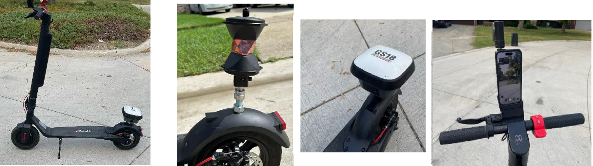

Performance of an e-Scooter+IPhone mobile mapping system
Information Link to heading
Chair/professorship: Geosensors and Engineering Geodesy (GSEG)
Supervisor: Prof. Dr. Andreas Wieser
Advisor: Matej Varga
Suitable for: BSc/Mc/Master project
Number of students per group: 1-3
Maximum number of groups 1
Abstract Link to heading
Cities are constantly developing, demanding frequent updates of geospatial data and models. For instance, the City of Zürich maintains a detailed 3D city model (LOD2) with over 480 thematic layers (e.g., green spaces, bike paths, construction zones). Such a large quantity of geospatial information requires cost-effective and time-efficient data collection strategies. E-scooters are an attractive platform for mobile mapping systems, due to their widespread availability, speed and affordable-operative costs. A compact mobile mapping system can be mounted on an e-scooter just by using an iPhone. iPhones have all the sensors of mobile mapping systems, including GNSS for positioning, an accelerometer, gyroscope, and magnetometer for motion tracking, and a LiDAR scanner and camera for 3D object capture. However, the quality of the collected data is unknown.
In this project, students will investigate the feasibility of using an iPhone camera and LiDAR sensors for the collection of geospatial data. Besides iPhone sensors, RTK Rover, 360 prism and GNSS antenna will be mounted on the e-scooter. Before usage, all hardware and sensors will be calibrated and synchronized. For instance, calculations on movements and rotations from sensor data should refine the camera position estimations. The data acquisition will be performed in a mixed-urban area with varying platform speeds and environments with varying complexity. The collected sensor data will be transformed into a unique coordinate system. Afterwards, the data will be processed to get a point cloud and a 3D model. The performance of the mobile mapping system and 3D models will be assessed by comparison with high-quality benchmark data. The project will be conducted in collaboration with the office of Geomatics + Surveying of the City of Zurich (GeoZ). After the semester, a project can be continued.
